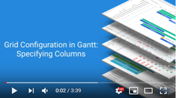
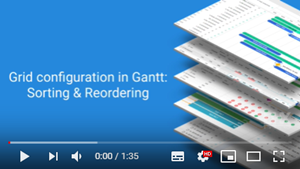
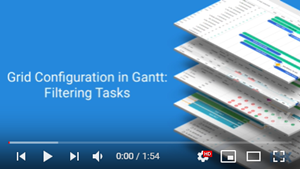
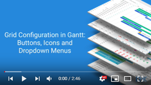
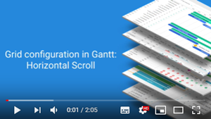
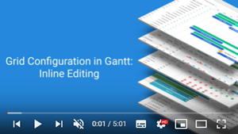
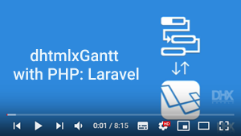

The article provides a short review of video guides prepared for you to make Gantt easier to understand.
By following these video tutorials, you can master such issues as configuring grid columns, customizing cells and headers of the grid, building a standard Gantt chart on different server-side platforms.
|
Specifying columns in Grid
The video tutorial demonstrates how to define the content of cells, how to set the data template and how to provide the ability to toggle between two Grid views. Related article: Specifying Columns |
 |
|
Drag-n-drop reordering of Grid columns
The video guide shows how to enable reordering of tasks within the same Tree level, how to speed up the performance for large dataset, etc. Related article: Reordering Tasks |
 |
|
Filtering tasks in Grid
The video tutorial teaches how to implement filtering while searching a task in Gantt. Related article: Filtering Tasks |
 |
|
Custom buttons, icons and dropdown menus in Grid cells and headers The video tutorial discusses how to add custom buttons for user actions in Grid cells and headers. |
 |
|
Visibility of Grid columns
The video guide shows how to add a horizontal scrollbar into Grid and how to allow a user to select which columns should be visible. Related article: Specifying Columns |
 |
|
Inline editing in Grid
The video tutorial demonstrates how to implement a capability to make any changes right through the grid. Related article: Inline Editing in Grid |
 |
|
dhtmlxGantt with PHP: Laravel
The video tutorial describes how to add Gantt into a Laravel app. Related article: dhtmlxGantt with PHP: Laravel |
 |
|
dhtmlxGantt with Node.js
The video guide walks you through the stages of implementing a Gantt chart on a Node.js platform. Related articles: How to Start with dhtmlxGantt, Server-Side Integration, dhtmlxGantt with Node.js |